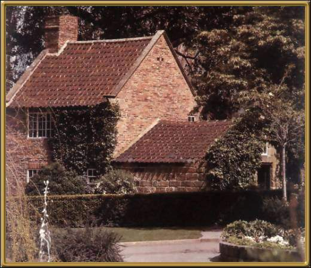

This is the original cottage that Captain Cook lived in. It was brought out to Australia and reassembled piece by piece. You can visit it at the Fitzroy Gardens, near the heart of Melbourne.
Photographer: Unknown